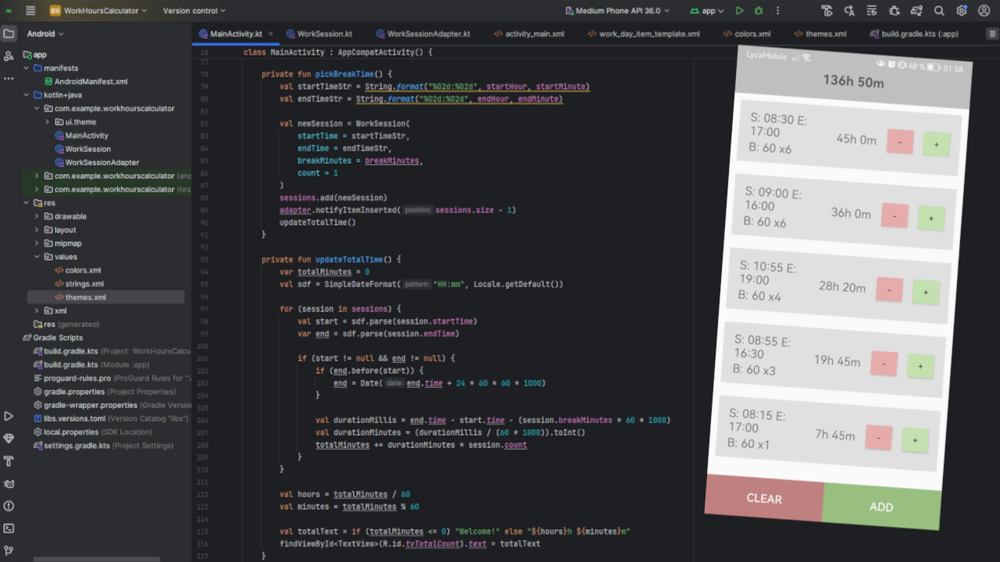
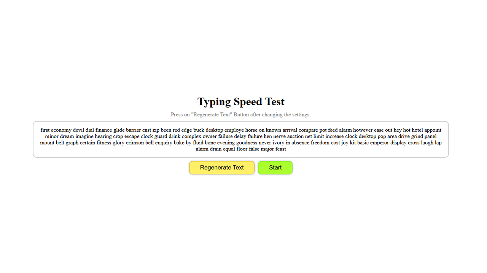
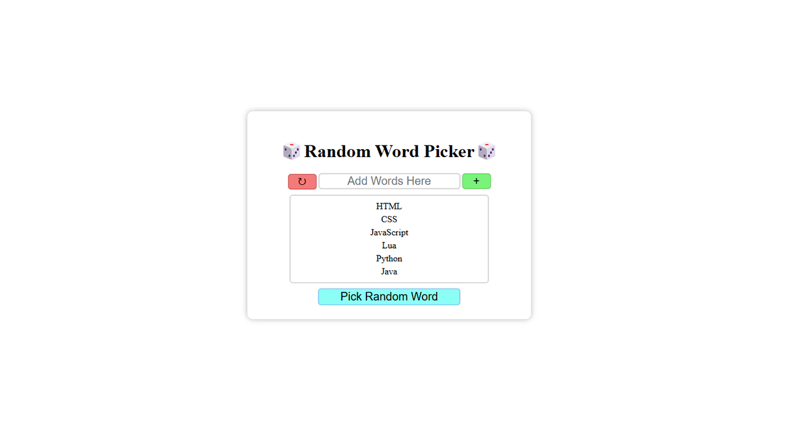
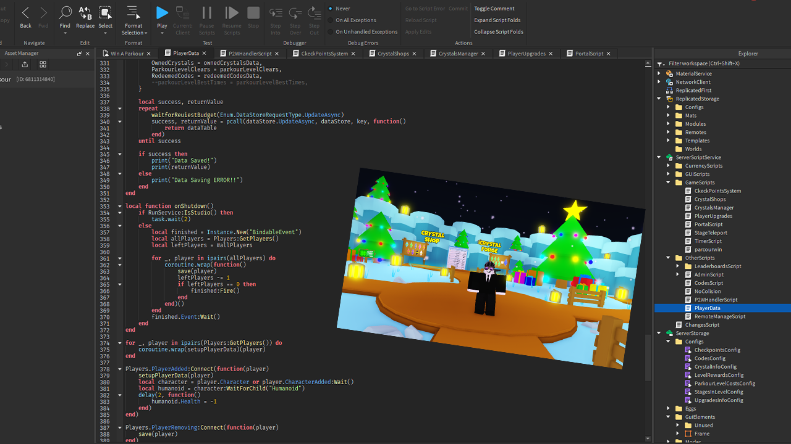
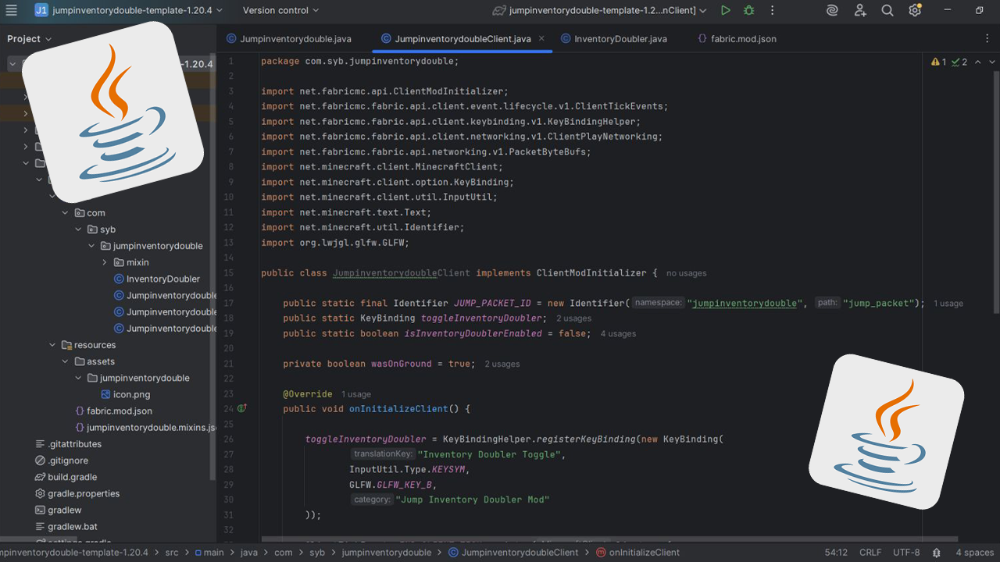
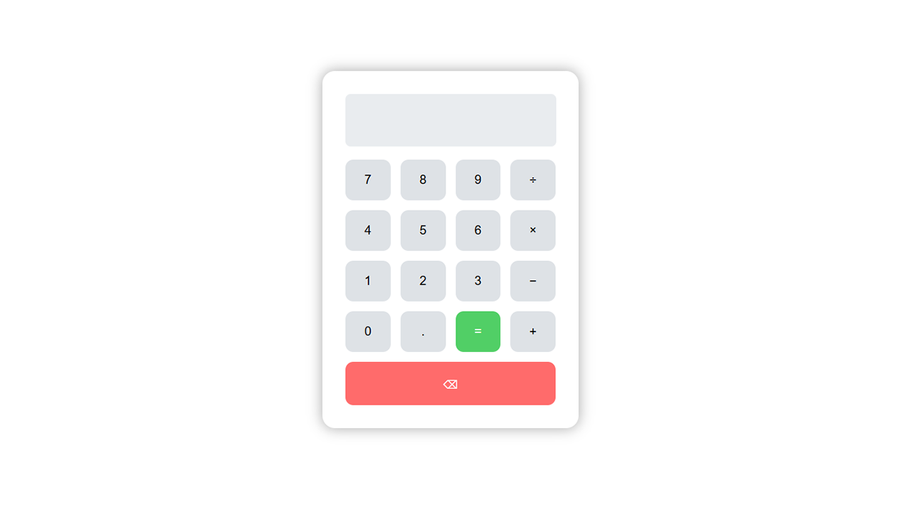

Welcome!
Hi, I'm Cristian, a self-taught developer passionate about creating
tools, games, apps and websites.
I specialize in JavaScript, Python, and Java. I love developing ideas
into reality through code.
"Code is not just a skill, it's how you solve problems, learn, and create."
Projects
Work Hours Calculator
An Android app that calculates total work time, built with Kotlin and XML.
 Visit HitHubTyping Speed Test
This is a project I developed to learn more about JS and improve my typing speed.
 Visit WebsiteRandom Word Picker
This is the first project I developed for somebody else using HTML, CSS and JS.
 Visit WebsiteRoblox Game
This is a game I developed to learn game development using Lua In Roblox Studio.
 Visit GameMinecraft Mods
I made Minecraft Mods for a YouTuber and some Friends using Java.
 Visit GitHubCalculator
This is a project I developed to learn more about JavaScript.
 Visit WebsiteAbout Me
Name:
Cristian
Age:
18
Languages:
English, Romanian, German, Russian
Personal Qualities:
Problem-solving, self-learning, creativity, teamwork
Programming Languages:
Java, Lua, Python, JavaScript, HTML/CSS, Kotlin, XML
Projects & Experience:
Hi, I'm Cristian. I am a developer with a strong foundation in programming and a love for creative problem-solving.
I discovered coding when I was 15, starting with Python to automate my homework. What began as a simple curiosity quickly turned into a powerful tool. I realized how impactful code can be in everyday life and decided to explore it further.
Soon, I began building small applications for fun and learning new languages. I moved on to modding Minecraft, which led me to learn Java. One of my first mods caught the attention of a YouTuber, and I began developing custom mods for his videos. This experience sparked my interest in game development and introduced me to the collaborative side of programming.
Over time, I experimented with various technologies, developing simple games in Lua, mobile apps in Kotlin, and learning about server connections, data structures, and more through real-world projects. I even taught myself 3D modeling, UI design, and asset creation to support my solo game development.
After a break to focus on school, I returned to programming with more determination than ever. I’m now actively expanding my skills in web and software development using Kotlin, XML, HTML, CSS, and JavaScript, building responsive websites, apps and refining my full-stack capabilities.
I'm currently looking for opportunities to grow as a developer, contribute to exciting projects, and continue learning in a professional environment.